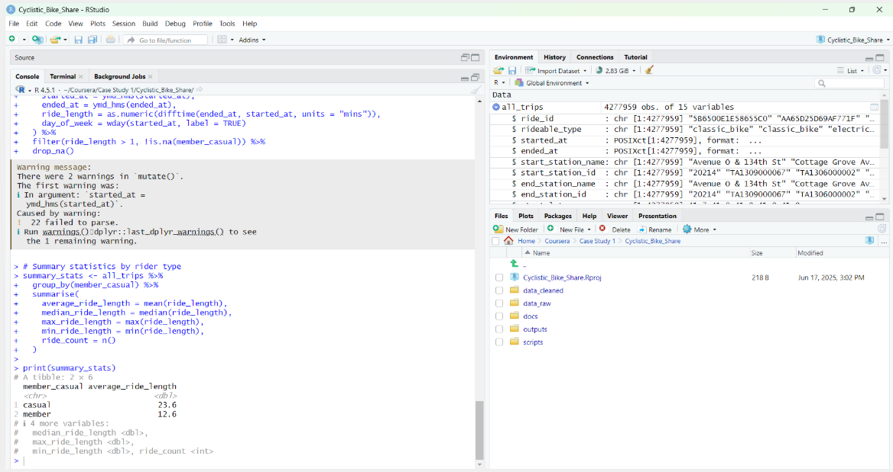
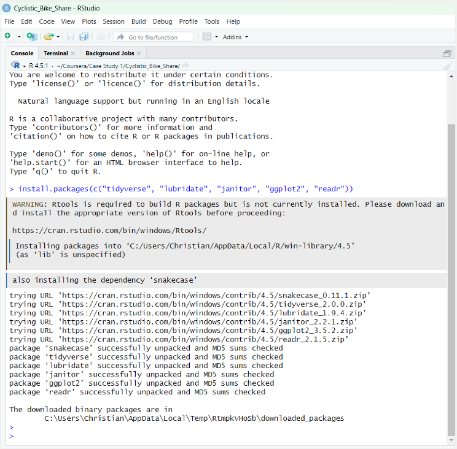
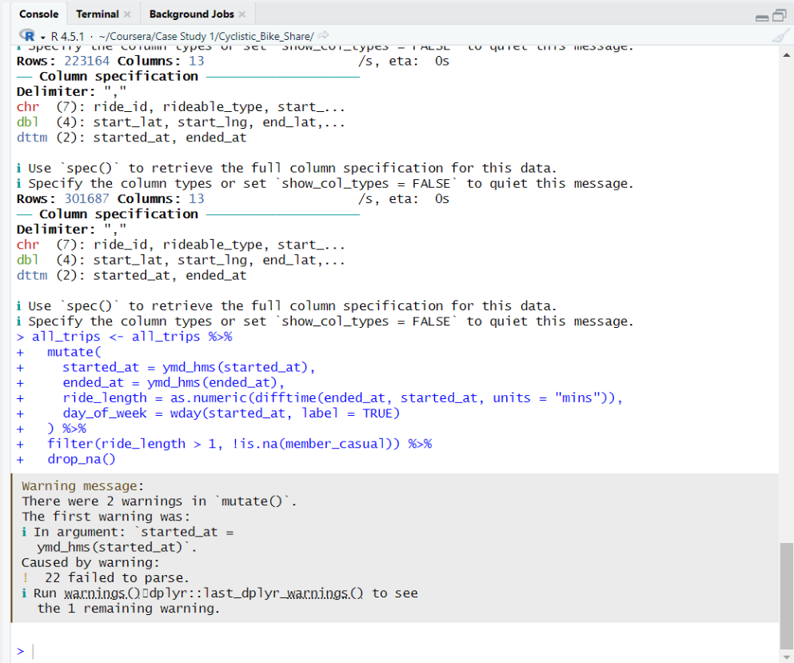
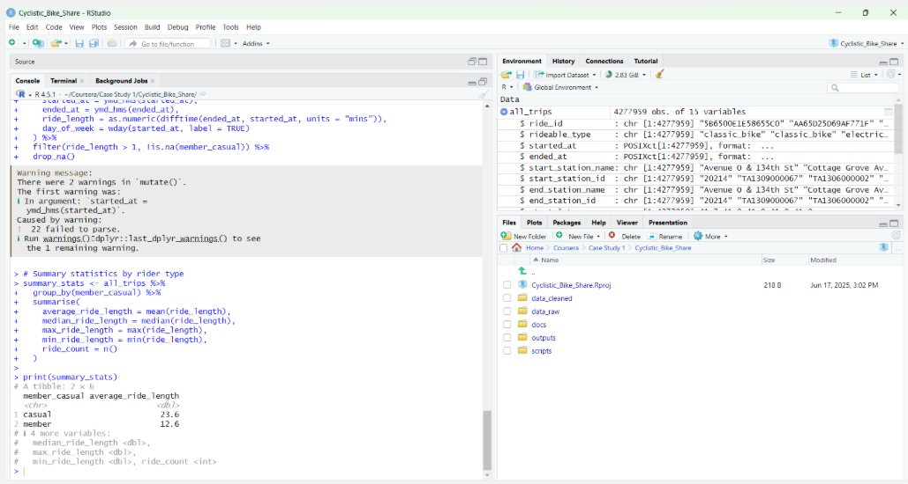
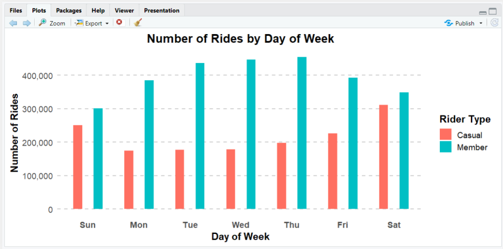
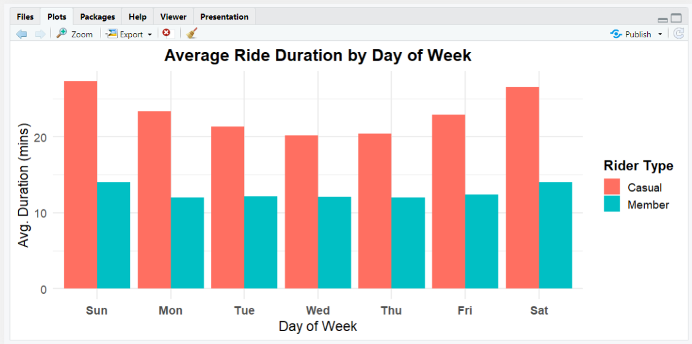
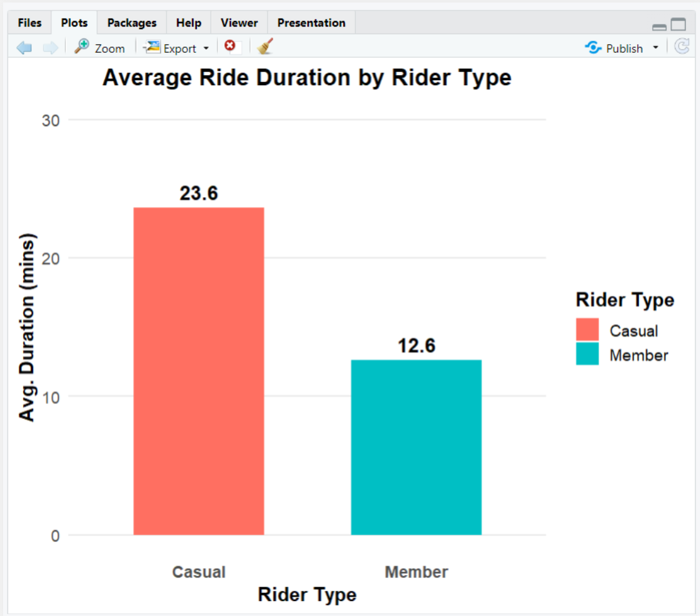

A year-long analysis of Chicago's Cyclistic bike-share program comparing casual riders and annual members, to surface the behavioral differences that marketing can use to convert high-usage casual riders into long-term members.
What I built
Combined 12 months of Cyclistic trip data in R using tidyverse, lubridate, and ggplot2 — cleaning, engineering features, and summarizing behavioral patterns. Then piped the results into a Tableau dashboard that gives marketing a clear, filterable view of how different riders use the system.
Key outcomes
ride_length and day_of_week features engineered for segmentationPhase 1
Import & Standardize
Combined 12 monthly CSVs using map_df(read_csv) and normalized column names with clean_names().
Phase 2
Clean
Parsed timestamps, removed rides under 1 minute or over 5 days, dropped rows with missing values.
Phase 3
Feature Engineering
Created ride_length in minutes and day_of_week labels for weekday vs weekend segmentation.
Phase 4
Analysis
Summarized rides by rider type, weekday, and season using group_by() and summarise().
Phase 5
Visualization
Built ggplot2 charts for exploration, then published a Tableau dashboard for stakeholder storytelling.
The 12 monthly CSVs are downloaded from the Divvy portal and stacked into one dataframe in a single pipeline call. Column names get normalized so everything is consistent before cleaning begins. The main cleaning steps handle timestamps, remove impossible durations, and drop incomplete rows.
library(tidyverse)
library(lubridate)
library(janitor)
file_list <- list.files("data_raw",
pattern = "*.csv")
all_trips <- file_list %>%
map_df(read_csv) %>%
clean_names()
RStudio environment after combining all 12 months into one dataframe
ymd_hms()member_casual labels retained
RStudio console confirming packages installed and ready
The raw data doesn't have a ride duration column or a day-of-week label — both need to be derived. These two features are what make the behavioral comparison between rider types possible.
all_trips <- all_trips %>%
mutate(
ride_length = difftime(
ended_at, started_at
),
day_of_week = wday(
started_at, label = TRUE
)
) %>%
filter(ride_length > 1) %>%
drop_na()
Mutation steps for ride_length and day_of_week with invalid ride filters applied
With clean, enriched data, behavior was summarized by rider type, weekday, and month. The key finding: casual riders take longer, weekend-concentrated trips while members ride shorter, weekday-consistent routes — a pattern that maps directly to conversion strategy.

Summary stats — ride length and volume by rider type

Ride volume by weekday — casual spikes Sat/Sun, members peak Mon–Fri

Avg duration by weekday — casual rides are consistently longer, especially on weekends

Avg ride duration by rider type — casual riders stay out nearly twice as long as members
The cleaned, engineered dataset was exported from RStudio as a CSV and connected to Tableau Desktop. The dashboard surfaces the same behavioral patterns in an interactive format with filters for rider type, weekday, and hour — giving marketing a direct tool for targeting decisions.

Tableau dashboard — ride volume, duration, and seasonal trends filterable by rider type
Cyclistic rider behavior — 12 months by type, weekday, and season
Weekday volume — casual weekend peaks vs member weekday consistency
Convert high-usage casual riders into entry-level members.
Keep members engaged through value and convenience.
Use behavioral data to keep the system running smoothly.
This project connects raw open trip data to concrete membership strategy. The R pipeline handles the heavy lifting — merging, cleaning, and enriching 4.2 million rows — and the Tableau dashboard makes the findings accessible to a non-technical audience. The behavioral gap between casual riders and members is clear enough that marketing campaigns can be designed directly from it.